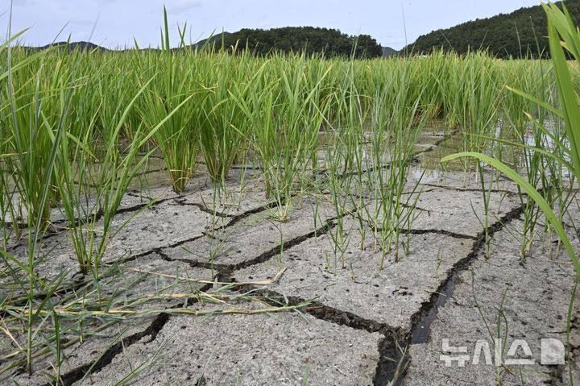
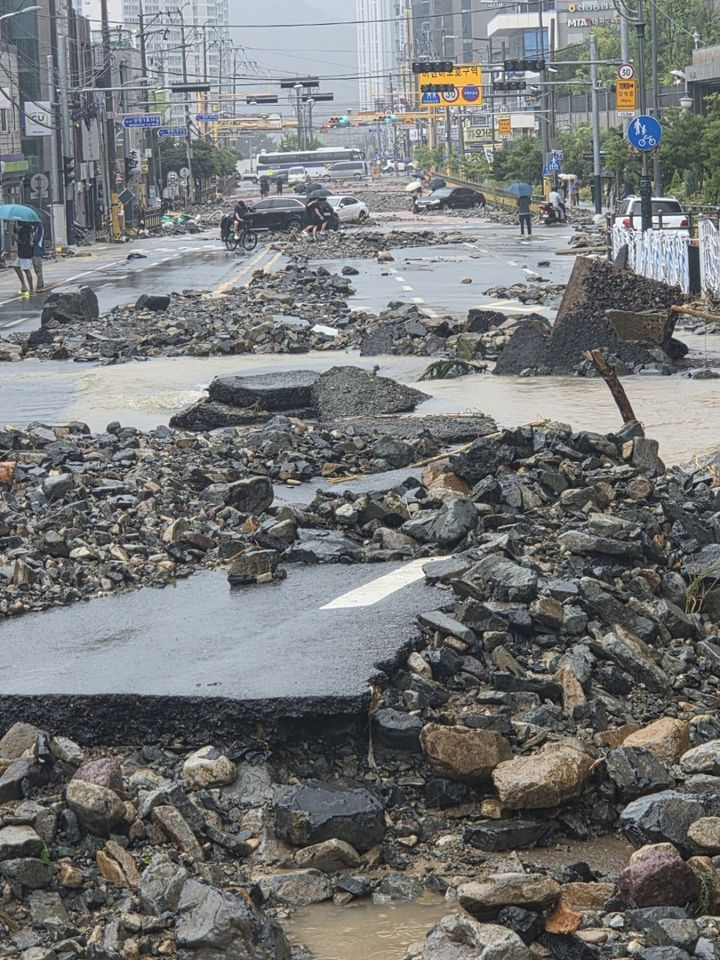
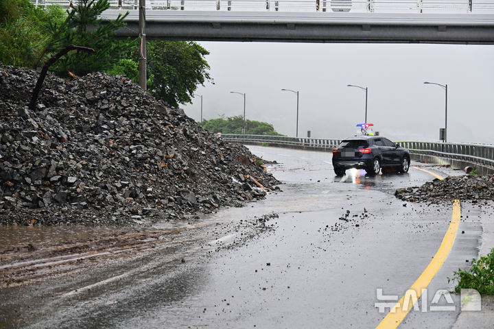
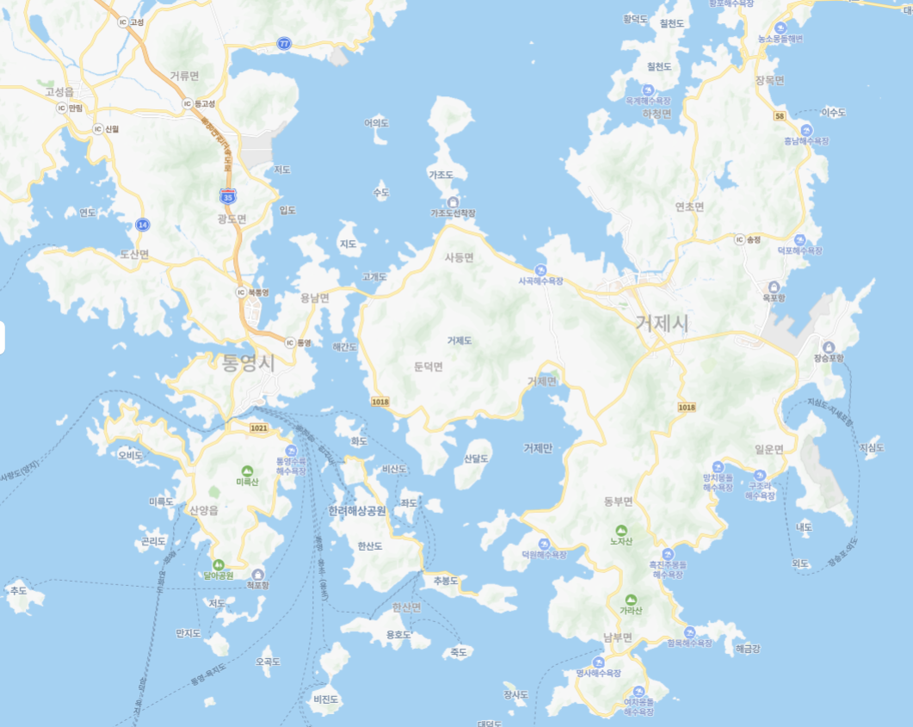
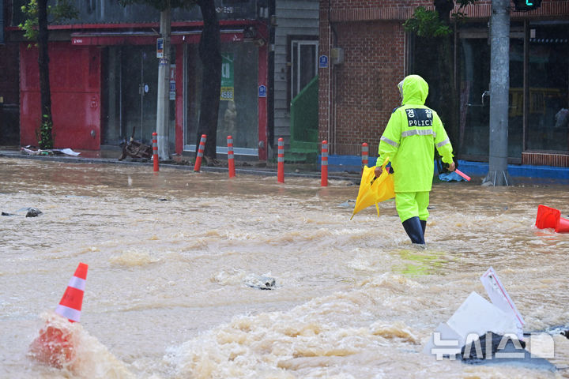

젖어 있던 흙
빗물이 비교적 천천히 스며듭니다
침투 많음 · 지표 유출 적음
현장 영상 재생 중 · 경남소방본부 제공
↔
DRAG
폭염에 갇힌 양산
폭우에 잠긴 거제
폭염 사이∨ 폭우 중간이 없다
불볕더위·물폭탄…남부의 롤러코스터 여름
42.5℃양산 역대 최고기온
927㎜거제 사흘 누적 강수량
한 계절의 두 극한을 따라가세요
01 · 폭염이 먼저 왔습니다
비는 적게 내렸고,
더위는 기록을 넘어섰습니다.
양산은 42.5℃로 국내 기상 관측 최고기온을 새로 썼습니다. 경남의 7월 강수량은 평년의 23% 수준에 그쳤습니다.
갈라진 경계를 좌우로 끌어보세요.

먼저42.5℃양산 기록적 폭염
→
그리고23%7월 경남 평년 대비 강수량
→
광복절 연휴927㎜거제 사흘 누적 강수량
02 · 말랐던 땅에 폭우가 오면
같은 비도
다르게 흐릅니다.
오래 마른 흙은 표면이 굳고 갈라져, 갑자기 쏟아진 물이 스며들기 전에 지표를 타고 흐를 수 있습니다.
오래 말라 굳은 흙
스미기 전에 지표를 타고 흐릅니다
침투 적음 · 지표 유출 많음


03 · 물이 없던 땅
얼마 전까지는
비를 기다렸습니다.
7월 경남 강수량은 평년의 23%. 숫자만으로는 감이 잘 오지 않습니다.
평년 강수량을 네 컵이라고 하면
한 컵도 채우지 못한 양
그게 평년의 23%입니다.
그런데 광복절 연휴 사흘 동안
927㎜
거제 평년 여름 석 달
935.1㎜
8월 15~17일 사흘
927㎜
여름 석 달치의 99%가 사흘 만에 쏟아졌습니다.
8월 15~17일 · 거제 비를 기다리던 땅에
너무 많은 비가 왔습니다. 여름 석 달치가 사흘 만에 쏟아졌습니다.
04 · 왜 거제와 통영이었나
구름은 들어왔고,
빠져나가지 못했습니다.
천천히 스크롤해 보세요. 남쪽의 수증기가 들어오고, 동쪽 고기압에
막혀 같은 자리에 비를 쏟는 과정이 이어집니다.

거제·통영
H
동쪽에서 버틴 고기압
남해의 따뜻한 수증기
강수대 이동
동쪽으로 이동
1수증기 유입
2비구름 발달
3이동 정체
지도 이미지: 네이버 지도 캡처 · 기압·강수대는 원리 설명용 개념도
8월 15일 · 비구름 접근
남해의 수증기를 머금은 구름이 다가왔습니다.
비구름 접근
서쪽에서 접근한 저기압과 북동쪽 고기압 사이로 남풍이 강해졌습니다.
남해안 집중
남쪽의 따뜻하고 습한 공기가 하층제트를 타고 계속 유입됐습니다.
비구름 정체
거제 지형에서 발달한 비구름은 빠져나가지 못한 채 기록적인 비를 쏟았습니다.
① 남쪽 수증기
강한 남풍을 타고 끊임없이 유입
② 동쪽 고기압
비구름이 동쪽으로 빠져나갈 길을 차단
③ 거제의 산지
바람을 늦추고 비구름 발달에 영향
05 · 한 시간이 무너진 속도
1시간에 124.5㎜
17일 거제에는 한 시간 동안 관측 이래 가장 많은 124.5㎜의 비가 쏟아졌습니다.
강수량 1㎜는 수평면 1㎡에 물 1L가 내린 것과 같습니다. 이는 강우량을 부피로 환산한 값이며 실제 침수 수심은 아닙니다.
“200년에 한 번 수준”은 통계적 재현기간입니다. 200년 동안 다시 오지 않는다는 뜻은 아닙니다.
06 · 927㎜의 높이
비를 한곳에 모으면
어디까지 차오를까
거제 전체에 내린 비가 흘러가지 않고 평평한 바닥에 그대로 쌓인다고 가정한 개념 비교입니다.
0㎝
30㎝
60㎝
90㎝
120㎝
150㎝
180㎝
92.7㎝
성인
키 170㎝ 가정
아동
6~7세 · 키 120㎝ 가정
927㎜의 비는 바닥에 92.7㎝ 높이로 쌓이는 양입니다.
※ 강수량의 높이를 몸과 비교한 것입니다. 실제 침수 깊이는 지형·배수·유속에 따라 크게 달라집니다. 인물은 평균치가 아닌 비교용 가상 모형입니다.
07 · 물살 앞에서
버틸 수 있는 높이는
없습니다.
깊이보다 더 무서운 것은 속도입니다. 침수된 길은 얕아 보여도 들어가지 마세요.

15㎝
발목 위로 차오른 빠른 물
성인도 중심을 잃을 수 있습니다.
유속, 바닥 상태, 부유물에 따라 더 얕은 물도 치명적일 수 있습니다.
침수된 도로라면, 돌아가세요.※ 사진은 실제 폭우 현장입니다. 표시한 수심과 사진 속 실제 수심이 일치한다는 뜻은 아닙니다.
RECORDS
기록은 모두
새로 쓰였습니다.
양산 낮 최고기온
42.5℃
국내 기상 관측 사상 최고
거제 사흘 누적
927㎜
평년 여름 석 달과 비슷
거제 하루
약 654㎜
전국 역대 3위 수준
거제 1시간
124.5㎜
1972년 관측 이래 최고
통영 사흘 누적
약 751㎜
평년 여름 강수량 초과